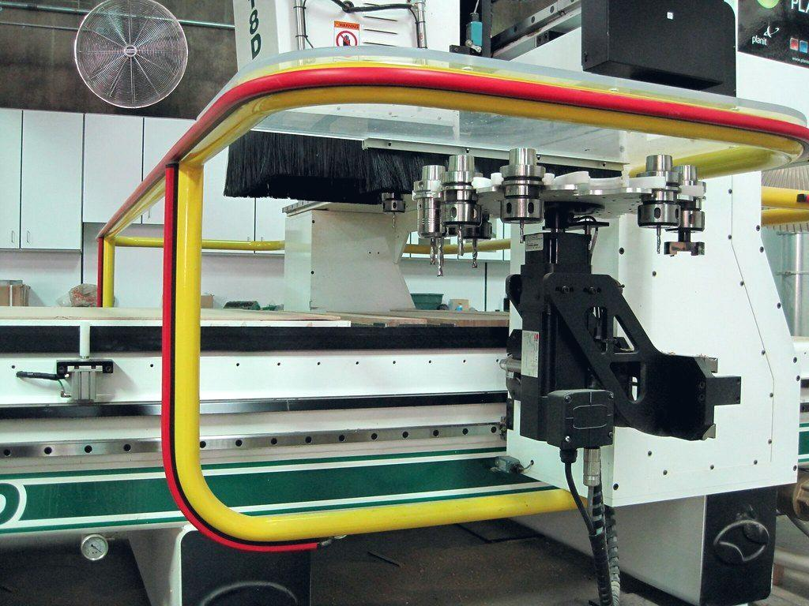
Des projets détaillés, contraintes et budgets compris
Chaque fiche décrit un chantier de bout en bout : le contexte, la contrainte technique qui a orienté les choix, la solution retenue et le budget réel. C'est ce qui vous permet de situer votre propre projet avant même de demander un devis.
Aucun projet dans cette catégorie pour l'instant. Décrivez le vôtre — il pourrait être le premier.
 Enseignes
EnseignesEnseigne lumineuse pour une boulangerie de centre-ville
Le local se situe aux abords d'un monument historique : le caisson plein était refusé d'office par l'Architecte des Bâti…
Voir le projet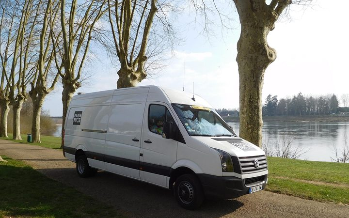
Covering véhiculeMarquage d'une flotte de six utilitaires
Trois silhouettes distinctes, donc trois gabarits, pour un rendu qui devait rester identique à l'œil. L'entreprise ne po…
Voir le projet Signalétique
SignalétiqueSignalétique complète d'une maison de santé
Concilier trois exigences : l'accessibilité réglementaire d'un établissement recevant du public, la déontologie propre à…
Voir le projet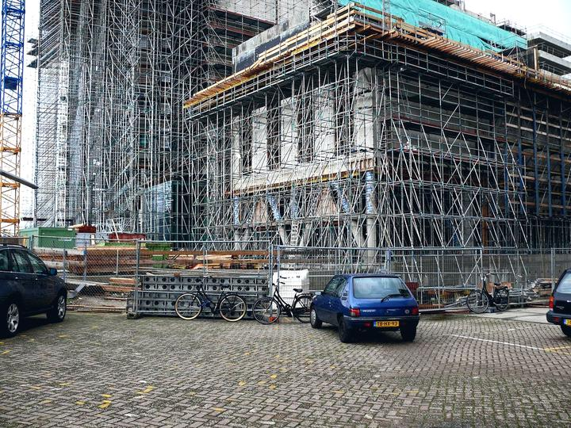
ImpressionBâche d'échafaudage sur une façade de sept étages
Une bâche pleine de 148 m² se comporte comme une voile : sur un échafaudage, la prise au vent aurait été rédhibitoire. L…
Voir le projet Vitrophanie & PLV
Vitrophanie & PLVHabillage de vitrine d'une agence immobilière
L'ancien système à pinces demandait près de deux heures de manipulation hebdomadaire. La vitrine était par ailleurs satu…
Voir le projet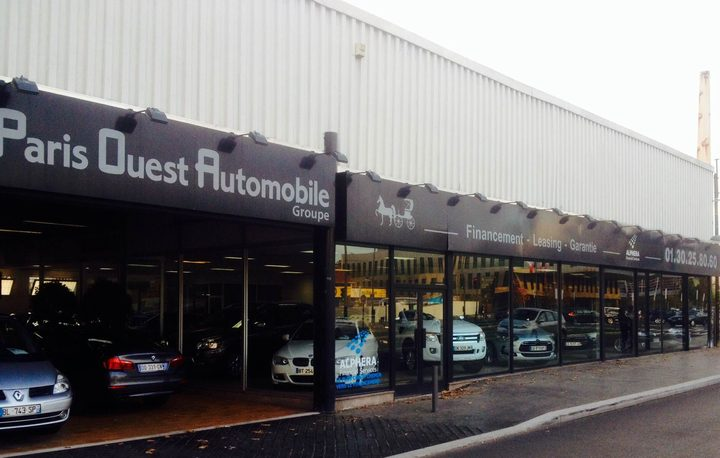
EnseignesTotem d'entrée pour une concession automobile
La lecture se fait à environ 120 mètres et à vitesse constante. L'ancien panneau, dimensionné à l'œil, était illisible d…
Voir le projet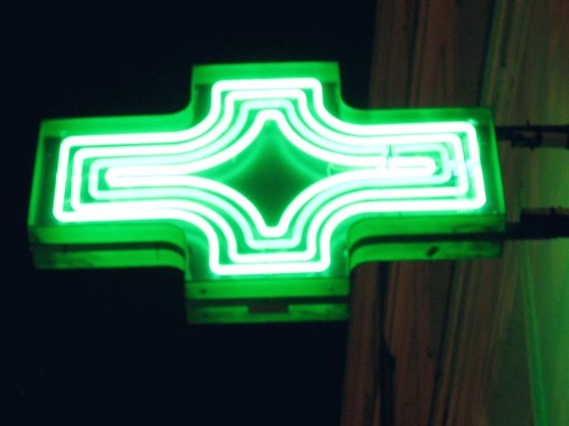
EnseignesCroix et enseigne pour une officine
La croix devait rester visible dans une rue étroite, tout en permettant d'afficher les gardes et les campagnes de préven…
Voir le projet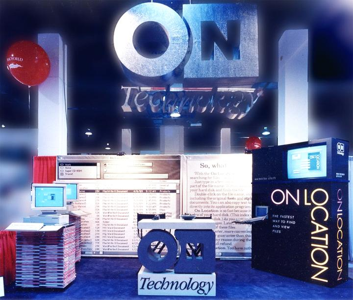
Vitrophanie & PLVStand textile pour un salon professionnel
Les panneaux rigides s'abîmaient au transport et devaient être refaits presque chaque année. Le montage mobilisait trois…
Voir le projet Signalétique
SignalétiqueMarquage au sol d'un entrepôt logistique
Le marquage adhésif posé deux ans plus tôt avait été arraché en quelques mois par les rotations sur place des chariots. …
Voir le projet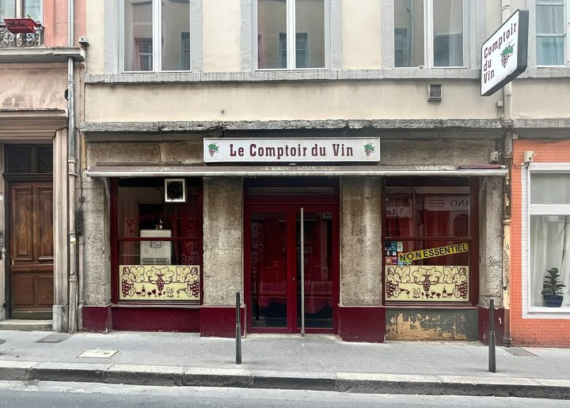
EnseignesNéon LED et enseigne pour un restaurant
Le règlement local encadrait strictement l'enseigne de façade. Il fallait donc créer l'attractivité autrement, sans dépa…
Voir le projet Signalétique
SignalétiqueSignalétique de sécurité d'un atelier de production
La signalétique existante mélangeait plusieurs générations de pictogrammes, dont certains antérieurs à la norme ISO 7010…
Voir le projet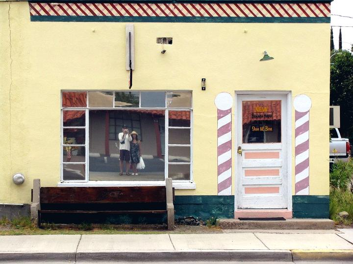
Vitrophanie & PLVDevanture complète d'un salon de coiffure
Préserver l'intimité des clientes installées aux bacs sans transformer la vitrine en mur opaque — l'erreur la plus fréqu…
Voir le projet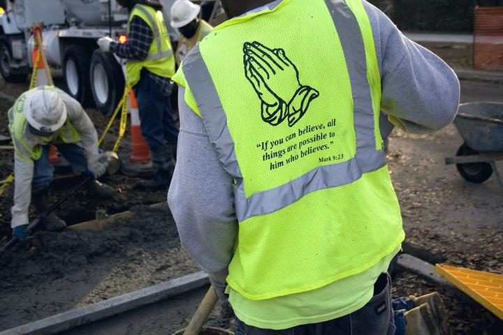
Objets publicitairesTextile et objets pour une entreprise du bâtiment
Marquer des vêtements EN ISO 20471 sans leur faire perdre leur classe de visibilité, ce qu'un marquage trop grand ou mal…
Voir le projet Maquette & création
Maquette & créationCréation d'identité visuelle et déclinaison complète
Le tracé comportait un dégradé et des filets de 0,3 mm : ni découpable dans l'aluminium, ni lisible à deux mètres, ni ut…
Voir le projet Pose & nacelle
Pose & nacelleDépose et repose d'enseigne en nacelle
L'accès nacelle empiétait sur une rue piétonne très fréquentée en journée, et le ravalement récent interdisait toute rep…
Voir le projet Signalétique
SignalétiqueJalonnement et signalétique d'un pôle administratif
L'organisation interne des services ne correspondait pas au parcours réel des usagers. Le vocabulaire différait par aill…
Voir le projet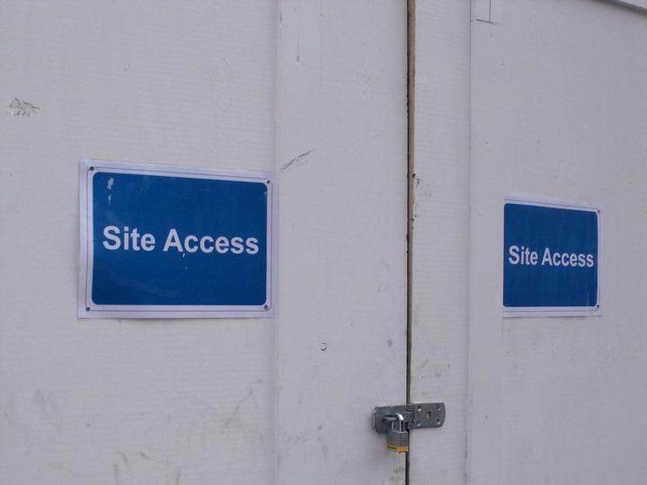
ImpressionPanneaux de chantier et bâches de palissade
Le panneau de permis de construire conditionne le point de départ du délai de recours des tiers : son contenu et sa prés…
Voir le projet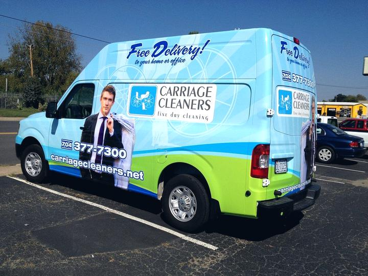
Covering véhiculeTotal covering d'un véhicule de société en bord de mer
Le bord de mer est le pire environnement pour un covering : sel, UV et lavages fréquents. Un film calandré n'y tient pas…
Voir le projetVos chantiers ont leur place ici
Chaque réalisation publiée est une page indexée qui travaille pour vous et pour le réseau. Nos partenaires nous transmettent leurs photos de chantier ; nous rédigeons la fiche, la publions et vous créditons.
- Votre entreprise citée et liée depuis la fiche
- Une page de plus positionnée sur votre ville et votre métier
- Rédaction technique prise en charge par nos soins
- Vous validez avant publication

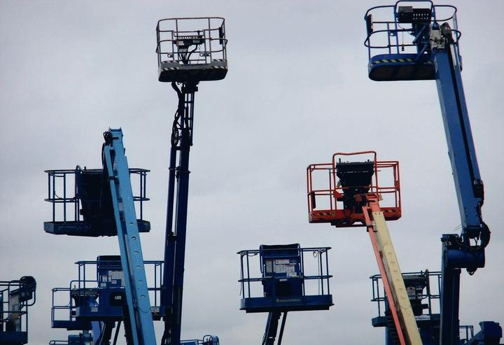


Vous avez un projet de communication visuelle ?
Commerce, entreprise, artisan, profession libérale, collectivité : décrivez votre projet en 2 minutes. Nous le qualifions et le confions à des professionnels sélectionnés près de chez vous. Vous recevez des propositions comparables sous 48 heures, gratuitement et sans engagement.
Demander mon devis gratuit